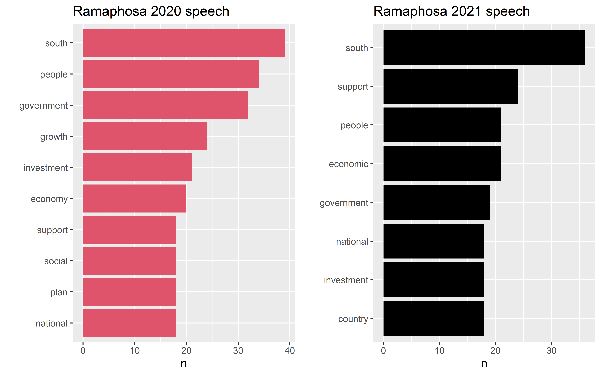

Data Science for Industry Assignment 2
Abstract
This paper explores the application of different predictive models to text data, the predictive models applied are neural networks and tree based methods. We construct and compare three predictive models using different forms of the data set as our input. The aim is to build a model that take a sentence of text as input and return a prediction of which president was the source of that sentence. The data set used is the State of the Nation Address of the President of South African (SONA) speeches, which contains all the speeches from 1994 to 2023. Our findings through different explorations of the mentioned predictive models, with different parameters, the neural network models performed better the decision tree methods. However, the neural network returned an accuracy in the margins 0.5 - 0.55 on unseen data, which is quite low.
Introduction
The objective of this paper is to construct at least three predictive models that takes a sentence of text as an input and return a prediction of which president was the source of that sentence. The data set that will be used is the State of the Nation Address of the President of South Africa (SONA). The data set contains speeches of all the SONA speeches from 1994 to 2023. This is a multi-classification problem with 6 classes since we had 6 presidents who have delivered speeches in the specified period.
Th paper is divided into three main sections namely Exploratory Data Analysis (EDA), Methodology and Results and Discussion. The overview of each section is as follows:
Exploratory Data Analysis - this section contains the following sub-sections:
Data pre-processing and data analysis - we provide information on how the data was cleaned and transformed so that we are conduct data analysis. The data analysis part includes an overview of the most commonly used words and bigrams in the speeches, we also take a closer look at president Cyril Ramaphosa’s 2020 and 2021 speeches.
Imbalanced data -in this section, analysis the average number of sentence used by each president in their speeches and see which president in under presented with respect to the length of their speech.
Methodology - this section contains the following sub-sections:
Bag of words model and TF-IDF model - The data set is converted to the two format which is what will be used the input in the predictive models that will be fitted.
Predictive models - In this sub-section, we provide a brief theory on each of the predictive models that will be fitted namely neural networks and tree based methods.
Results and Conclusion - the results of the fitted models are provided in this section. The later section will compare the performance of the models on the different data sets used and any short comings. We also touch on some improvements that can be made to the analysis.
Exploratory Data Analysis
Data pre processing
Before we begin with the data cleaning, we load the data by the file names. The content (texts) of each speech is then loaded to an empty vector which is created prior the beginning of the cleaning process. It worth to note the individual speech contents are take from Ian’s github page and read as characters to the empty vector. The resulting data frame has two columns filename and speech. New columns, president, year and date are added to indicate from which president the speeches are from and also the dates the speeches took place. These are generated by using the file names since each file name contains the president names and the dates of speeches. Any unnecessary text is removed from the data set, these includes website links , encoding for new lines \n , backlashes and make sure all the dates are in the form dd-mm-yyyy. All the speeches being with the date on which they were delivered, we remove these in the data as they are not of interest. These dates are used to generate the dates column in the data frame , the dates are removed after the dates column has been generated. A new column, named pres_num ,is also included where each president name is denoted by integers from 1 to 6. All these data cleaning procedure are conducted using the tidyverse and tidytext packages.
Data Analysis
In order to begin with EDA, we have to tokenize the data. As much we are interested in sentences, in our EDA will tokenize the data set by words and also sentences. This will give us insights on words that are commonly used by the presidents in their speeches.

Figure 1 depicts the top 10 most used words by the 6 presidents. In Figure 1 , we see that the words government , south , people and national are the most used words by the presidents. These words are indication of what the speeches are all about.

In Figure 2 and ?@fig-ramaphosa_bigrams , we look at Ramaphosa’s speeches for the year 2020 and 2021. These speeches are of interest as they were made before the start of Covid-19 and after Covid-19. Upon analysing the data, sort the top words and bigrams used, we noticed that figures which were included in this speech were treated as individual words. For example, if the figure R250 000 was mentioned somewhere in the speech, R250 and 000 were treated as individual words. So after we extracted Ramaphosa’s 2020 and 2021 speeches, we cleaned the data to remove these space between the numbers. Before we did the cleaning, 000 was the most used ‘word’ in the speech for 2021 but not for 2020. This implies that a lot numbers were mentioned in Ramaphosa’s speech compared to his 2020 speech. There isn’t much difference between the words used in the 2020 and 2021 speeches in Figure 2.

In Figure , this is where we notice a difference between the two speeches. As one would expect, the bi-grams Covid-19, million people and create jobs appears in the 2021 speech. The top 3 most used bi-grams are similar in both speeches.

Imbalanced data
In Figure 3 , the average number of sentence for each speech is displayed for each president. We can see that deKlerk’s speech had less number of sentences on average compared to the other presidents. As much as Motlanthe had only 1 speech, but the average number of sentence in his speech was in the same range as that of Zuma, Mbeki , Mandela and Ramaphosa.
This creates an imbalance in the data set as deKlerk will be under represented in the data set. This means when creating training and test set, the class represented will have less frequency compared to the other presidents. To work around this when fitting the models, we have decided to create different data sets where the row with deKlerk’s speech is removed. We compare the performance to the data set when use the data set as it is.
Methodology
Bag of words model
The machine learning algorithms that will be applied in the paper accept a certain format of text data as they cannot operate on raw text. This means the data set must be represented in a numerical form prior being feed into a machine learning algorithm. Topper (n.d.) The bag-of-words model is used to for this , one can think of this as a method to convert words to a numerical representation.
In this paper, we are interested to tokenizer the data into sentences rather than words. To achieve this, the data set is tokenized using tokens as sentences. An extra column is then added which shows the index of each sentence in the data. This is done in order to be able to track from which sentence do the words come from. The tibble is then further tokenized into words. The bag of words model created is based on the top 1000 most used words by the presidents.
tf-tdf model
This model measures the importance of a word to a document in a collection of documents ( Robinson (n.d.) ). This is measured by how frequently a words occurs in a document, which is termed term frequency (tf). For the bag of words model, we need to consider whether to remove stop words or not. But this model uses the approach where it looks at a term’s inverse document frequency (idf), this decreases the weight for commonly used words and increase the weights for those words that are not commonly used in the document. This implies for this model, we do not have remove stop words. Each term gets its own \text{tfidf} score given by as
tfidt(term) = tf(\text{term} \ t \ \text{in document}) \times idf(\text{term} \ t) \tag{1}
where
idf(\text{term t}) = \ln \left( \frac{n_{\text{docs}}}{n_{\text{docs containing term $t$}}} \right) \tag{2} and tf(\text{term t in document})=\frac{\text{Number of times $t$ appears in document $i$}}{\text{Number of terms in document $i$}} \tag{3}
where n_{\text{docs}} is the number of documents. The bind_tf_idf() function available on the tidyverse library to convert our data set to this format. Equation 2 and Equation 3 can be applied if one does the conversion form first principles , which is essentially what the function is performing.
The data set is converted to this format by using the tokenized data where token is set to words. The models will be fitted in both bag of words format and TF-TDF format of the data sets and compare the results based on the performance on the test set.
To fit the predictive models, different formats of the data sets will be used to assess the performance of each model under each format. The bag-of-words format and the TF-IDF format and also other format that will take into account the issue of imbalance of the data.
Predictive models
This section aims to briefly explain the theory behind each model that will be fitted and also some packages and parameters that are used in each model. The exact parameters are shown in Section 5 . This means, if we were to fit a tree based model that requires a certain number of trees as its parameters, th e exact value will be specified in Section 5.
The data set is splited into a training set and a testing set. The training set will be used to train the models and the performance of each model will assessed on the testing set. A 70/30 splitting rule is used in all the models, i.e. 70\% of the data will be used as the training set and 30\% as the testing set.
Neural networks
In this section , we fit a multi-layer perceptron Neural network. It solves the shortcoming of the feedforward Neural Network of not being able to learn through back-propagation. It is mainly used for classification problems which is exactly what we have. Since we have 6 presidents, we are dealing with a multi-classification problem with 6 classes. The fitting of the Neural Network is implemented using keras package in R. The general framework for modelling using this keras is given below:
Define the model. This entails specifying the layers in the models, the input layer and output layer will always be present as these refers predictor and target variables in the data set respectively. The input shape on the input layer has to correspond to the number of predictor variables in the training set. There is also an option to add drop out rate, a float between 0 and 1.This is a regularization technique that prevents the model from over-fitting.
Each layer must have its own activation function, this is determined by the type of data set, whether it’s continous or not. The most commonly used activation functions are SoftMax, ReLu and sigmoid.
The next step is to compile the model by specifying the loss function , the optimizer used and the metrics used to assess the performance of the model. For a multi-classification problem, the categorical_entropy since we have multiple classes.
The final step is fitting the model on the training set with a chosen number of epochs and the batch size. Predictions are then made on unseen data, the test set. The performance of the model is assessed based on the accuracy on the test set.
Tree based methods
The other predictive models that are considered are decision trees, which will include classification trees and gradient boosted trees. Each of these have their own advantage and disadvantage which will be explored below. The main aim to fit these tree method is to compare them to our neural network results. One of the disadvantages of these methods is that the predictive accuracy of the trees is not as good as some other classification approaches.
Classification trees
Classification trees are applied to problems where the target variable is categorically which is relevant to our data set. At each step during the tree growth, a certain splitting criterion must be applied. The splitting criteria that exists in the literature are the Gini Index , Entropy and Deviance. In the paper, the Gini Index will be splitting criterion used for splitting the classification trees. The Gini Index measures the variability within the leaf nodes of a tree. At each step during tree growth, we choose a split that results in the greatest reduction of the Gini Index. The Gini Index is given by
G =\sum_{j=1}^J G_j \quad \text{where} \quad G_j = \sum_{k=1}^K \hat{p}_{jk}(1-\hat{p}_{jk} ) \tag{4}
\hat{p}_{jk} is the proportion of observations in the target variable k =1 ,..., K within leaf node j=1,…,J
This method will be implemented using the rpart() package in R with method = class since this is classification problem with 6 classes i.e. the number of presidents in the data set. The default splitting criteria used by this package is the Gini index.
Gradient Boosted Trees
The algorithm for Boosting is similar to that of Random Forest but the main different is that the trees are grown sequentially using the information from the previous trees. In RandomForests, each tree is built on a bootstrap sample independently of the other trees James et al. (2013) .The boosting algorithm does not involved boostrapp sampling , the algorithm has three main parameters:
Tuning parameters for the gbm package:
B is the number of trees to grow - cross validation is used to select B since a large value of B may lead to over-fitting.
Learning rate (\lambda) - typical values are 0.01 or 0.001, are generally used as choices for the learning rate. The same values will be implemented in this paper.
Number of splits in each tree d - interaction depth of the model, the maximum number of splits the model has to perform on a tree. In most cases, d = 1 works well which impiles a single is considered.
In the methods stated above, one can explore the importance of the predictor variables used. However, our interest is to compare the performance of these models to the Neural Network in Section 4.3.1 section. Hence, the importance of the variable used will not be explored.
Results
Neural network
Four different models will be fitted. We start with a simple model, and then make modifications to the parameters as we move from one model to another to assess how the model perform which is determined by the accuracy of predictions of the test set. The models will be fitted on the original data set and also the data set where we have removed deKlerk’s speech. Throughout the paper, this model is referred to as the balanced data.The models fitted are indicated below:
Model 1
Number of hidden layers = 1 , activation function used RELu with 900 units.
Input layer : Activation function = ReLu , Units = number of rows in the training set, Inputshape = number of predictor variables.
Output layer : Activation function = SoftMax , units = 6 as we have 6 distinct lasses in the data set. The reason for using SoftMax it because we want to get probabilities since this is a classification problem.
Model 2 This model has the same parameters as model 1 but a drop out regularization is introduce in the input layer and hidden layer to prevent over-fitting. The penalty applied is 0.05. The optimizer used for this model is rmsprop.
Model 3 This model has the same parameters as model 1, an extra hidden layer with 1020 units. The activation function used for the extra hidden layer is the sigmoid function.
Model 4 This model has the same parameters as model 3 but when fitting the model, the data will be scaled.
In all the models where the activation function is not specified for the any of the layers, the input layer and the hidden layers uses the ReLU activation function and the output layer uses the SoftMax activation function was used. A batch size of 5 and 40 epochs was applied, there was no improvement in the accuracy of the model for large number of epochs hence a small value is used. (Refer to a figure in the appendix as evidence, this was for model 2)
| Model | Accuracy (original data) | Accuracy (balance data) |
|---|---|---|
| model 1 | 0.5248 | 0.5325 |
| model 2 | 0.5382 | 0.5481 |
| model 3 | 0.5326 | 0.5488 |
| model 4 | 0.5136 | 0.5092 |
Table 1 shows the performance of the models on the out-of sample data. The model performs better on the data set where we have tried to balance the data by removing the speech of the president that had few sentence i.e. deKlerk’s speech. However, there’s no significant difference in the accuracy of all the models on both data set as they both produce an accuracy around 0.5 .
Looking at the individual models in the balanced data, model 2 and model 3 had a higher accuracy compared to the rest of the models. This implies that changing the optimizer and adding an extra hidden layer slightly improved the performance of the models.
Classification trees
To fit the classification trees, we use the rpart package in R. This model will the fitted on bag of words format and also the TF-IDF format. In both cases, we will consider when using the original data and also when using the balanced data. The results of for these models are indicated in Table 2 .
| Data set | Data type used | Accuracy |
|---|---|---|
| Bag-of-words format | Original | 0.295 |
| TF-IDF format | Original | 0.295 |
| Bag-of-words format | Balanced | 0.281 |
| TF-IDF format | Balanced | 0.281 |
The models on the original data had better accuracy of 0.295 compared to the balanced data set. We also note that , the models attain the same accuracy irrespective of the format of the data that is used. This is cases for both the balanced and the original data. This implies that balancing the data did not make any significant improvement on the accuracy of the models. Similarly, whether we used the bag of words format or the TF-IDF format, we obtain the same accuracy of 0.295 and 0.281 respectively.
Gradient Boosted trees
| Data format | Data type used | Accuracy |
|---|---|---|
Conclusion
Comparing the overall results in the models fitted, the neural networks model performed better than the tree based based methods. We note that the performance of the neural networks on the different data sets varies as the parameters of the models are modified. This implies that it is still possible to get better results than the ones obtained in this paper as one tries to employ different modification to the parameters of the models. And the choice on the parameters to fix. The analysis was based on the top 1000 most common used words in the speeches, using more words could possibly yield different results although this is not guaranteed. We did not explore different numbers of words, this part was fixed.
With respect to the imbalance of the data set, only one option was considered to deal with data imbalance. This was assessing the average number of sentences of the speeches by each president. Then we decided to remove the president’s speech that was under represented. Our analysis was mainly based on using the two different data sets- the original data set and the balanced data set. Other techniques that could be considered included re-sampling techniques where the data is modified to balance the classes by oversampling and under-sampling. The second is SMOTE (Synthetic Minority Oversampling Technique) which creates synthetic examples for the under represented class in the unbalanced data.
List of packages used in R
In this section , we includes the main packages that we used in R and the corresponding sections in which the packages were used. The packages have also been cited under references. We only include the package names, not the individual functions that available under each package. These are shown in Table 4 . [Remove this]
| Package name | Usage |
|---|---|
tidyverse |
Data cleaning and pre-processing |
tidytext stingr |
Manipulation of text data |
keras |
Fit a feed-forward neural network |
gridExtra |
Organize multiple plots produced by the ggplot package to be one figure during EDA. |
rpart gbm |
Fitting tree based methods, classification tree , random forest and gradient boosted machines |
Data accessibility
The original data set used for this study can be found in link . We have also read the individual text files of the speeches for reading the data on R from Ian’s github page. All the analysis and fitting of models in this study will conducted using the free Statistical Computing software R. R Core Team (2023)